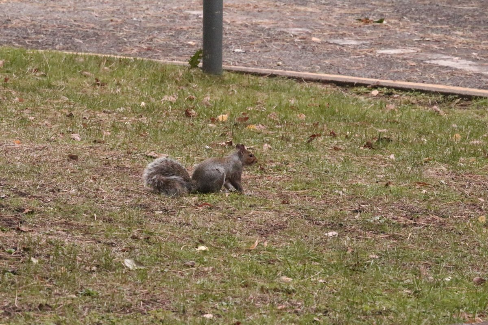

Authentic Brookes PhotoProfessor Pipkin examining a shiny new acorn beneath the beech tree leaves
Professor Pipkin
Chief Acorn Archivist & Honorary Dean of Forestry
Pipkin's Storybook Tale
Professor Pipkin has the softest grey fur and wears glasses made of tiny twigs. He loves counting shiny brown acorns every single morning. Whenever the golden autumn leaves fall down from the big trees, Pipkin scurries around hiding his favorite treats under soft green moss so he never forgets where they are. He is the smartest little buddy on the whole campus! Sometimes he even taps the tree trunks with his little paws, listening closely like a tree doctor to make sure the beech tree is healthy and happy.
Favorite Haunt
Under the ancient beech tree right outside Headington Hill Hall.